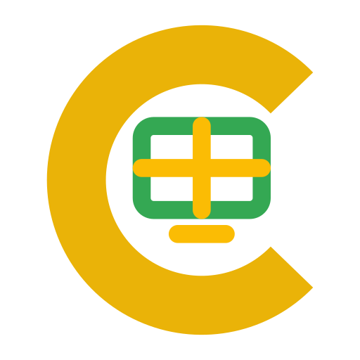

Your wall is empty
Pick channels from the Control Room on the left to start watching, or hit ＋ Add stream to register any YouTube live or embeddable URL. Your selection is saved and can be shared with a link.

Pick channels from the Control Room on the left to start watching, or hit ＋ Add stream to register any YouTube live or embeddable URL. Your selection is saved and can be shared with a link.
.m3u8 HLS/IPTV stream; or any page that allows embedding. For a whole IPTV playlist, use 📡 IPTV instead.live_stream embed, which only
renders while a channel is actually live and may otherwise show “unavailable”.
Get one free at the Google Cloud Console (enable “YouTube Data API v3”).
Stored only in this browser.
hls.js. Many providers block cross-origin fetches (CORS) — if the URL
fails, download the file and use “Import file” below. Public country playlists:
iptv-org.